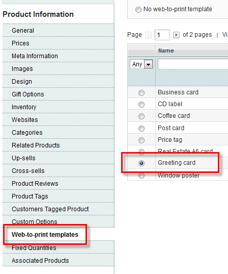
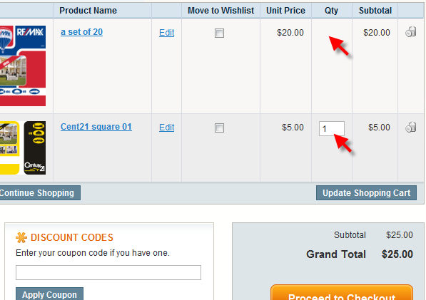
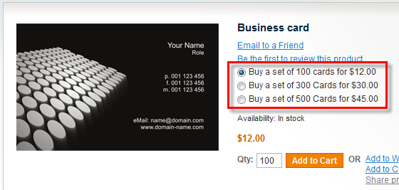
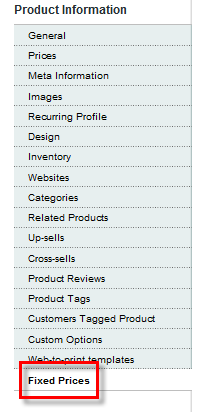
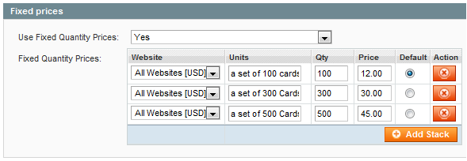

<?xml version="1.0" encoding="UTF-8"?><rss version="2.0"
	xmlns:content="http://purl.org/rss/1.0/modules/content/"
	xmlns:wfw="http://wellformedweb.org/CommentAPI/"
	xmlns:dc="http://purl.org/dc/elements/1.1/"
	xmlns:atom="http://www.w3.org/2005/Atom"
	xmlns:sy="http://purl.org/rss/1.0/modules/syndication/"
	xmlns:slash="http://purl.org/rss/1.0/modules/slash/"
	>

<channel>
	<title>Fixed quantities plugin &#8211; Magento web-to-print &amp; dynamic imaging</title>
	<atom:link href="http://www.zetaprints.com/magentohelp/category/fixed-quantities-plugin/feed/" rel="self" type="application/rss+xml" />
	<link>http://www.zetaprints.com/magentohelp</link>
	<description>Just another WordPress site</description>
	<lastBuildDate>Fri, 07 Jun 2013 06:55:21 +0000</lastBuildDate>
	<language>en-US</language>
	<sy:updatePeriod>hourly</sy:updatePeriod>
	<sy:updateFrequency>1</sy:updateFrequency>
	<generator>https://wordpress.org/?v=4.4.1</generator>
	<item>
		<title>Fixed Quantity uninstall</title>
		<link>http://www.zetaprints.com/magentohelp/fixed-quantity-uninstall/</link>
		<pubDate>Mon, 23 May 2011 12:14:35 +0000</pubDate>
		<dc:creator><![CDATA[atanas]]></dc:creator>
				<category><![CDATA[Fixed quantities plugin]]></category>

		<guid isPermaLink="false">http://www.zetaprints.com/magentohelp/?p=12894</guid>
		<description><![CDATA[Magento&#8217;s Connect Manager doesn&#8217;t support rolling back database changes and removing custom attributes added by the Fixed quantity extension. Follow these instructions to completely remove the extension. 1. Remove extension via Magento&#8217;s Connect Manager 2. Copy uninstall.php file to the root folder of your Magento installation. The file can also be found in /app/code/community/ZetaPrints/FixedPrices/uninstall folder [&#8230;]]]></description>
				<content:encoded><![CDATA[<p>Magento&#8217;s Connect Manager  doesn&#8217;t support rolling back database changes and removing custom attributes added by the <a title="Magento Fixed Quantity extension" href="../../../fixed-quantity/" target="_self">Fixed quantity extension</a>. Follow these instructions to completely remove the extension.<span id="more-12894"></span></p>
<p>1. Remove extension via Magento&#8217;s Connect Manager<br />
2. Copy <em><a title="Fixed Qty extension uninstall.php file download" href="http://magento-w2p.googlecode.com/svn-history/r1638/branches/ZetaPrints_Fixedprices/ZetaPrints_Fixedprices/ZetaPrints/Fixedprices/uninstall/uninstall.php" target="_self">uninstall.php</a></em> file to the root folder of your Magento installation. The file can also be found in <em>/app/code/community/ZetaPrints/FixedPrices/uninstall</em> folder of your Magento installation.</p>
<div style="padding-left: 20px;">
<p><strong>Note.</strong> Change including path at the beginning of the script if you copied it into another directory or a sub-directory of your Magento installation.</p>
<p>Examples:</p>
<ul>
<li>If you copied script into &#8220;<strong>media/</strong>&#8221; sub-directory, then change include path to &#8220;<strong><span style="color: #ff0000;">../</span>app/Mage.php</strong>&#8221; in the script.</li>
<li>If you copied script into &#8220;<strong>media/tmp/</strong>&#8221; sub-directory (or another sub-directory of &#8220;<em>media/</em>&#8221; directory) then change include path to &#8220;<strong><span style="color: #ff0000;">../../</span>app/Mage.php</strong>&#8221; in the script.</li>
</ul>
<p>In most cases, there are URL re-writes (re-directs) in root directory of Magento installation. This means that scripts from root directory are not available. The easiest workaround is to copy the script into a directory without re-writes (re-directs), e.x. &#8220;<em>media/</em>&#8221; directory and fix include path in the script as described above.</p>
</div>
<p>3. Point browser to <strong>uninstall.php</strong> file from your Magento installation</p>
<div style="padding-left: 20px;">
<p>Example:</p>
<p><em>http://www.your-store-url.com/media/uninstall.php</em></p>
</div>
<p>4. Remove the script from your Magento installation.</p>
]]></content:encoded>
			</item>
		<item>
		<title>Complex products with fixed quantities</title>
		<link>http://www.zetaprints.com/magentohelp/complex-products-with-fixed-quantities/</link>
		<pubDate>Mon, 09 May 2011 10:00:59 +0000</pubDate>
		<dc:creator><![CDATA[atanas]]></dc:creator>
				<category><![CDATA[Fixed quantities plugin]]></category>

		<guid isPermaLink="false">http://www.zetaprints.com/magentohelp/?p=12720</guid>
		<description><![CDATA[Our free Fixed quantity extension for Magento supports configurable products. Here&#8217;s an overview on web-to-print configurable product creation and pricing calculation. Configurable web-to-print products Lets say we have a configurable product made from 3 other simple products, e.g. a web-to-print greeting card that is sold in a few fixed quantity bulk options and can be [&#8230;]]]></description>
				<content:encoded><![CDATA[<p>Our free <a title="Fixed quantity extension for Magento" href="https://www.magentocommerce.com/magento-connect/fixed-quantity.html" target="_self">Fixed quantity extension</a> for Magento supports configurable products. Here&#8217;s an overview on web-to-print configurable product creation and pricing calculation.<span id="more-12720"></span></p>
<h2>Configurable web-to-print products</h2>
<p>Lets say we have a configurable product made from 3 other simple products, e.g. a <a title="Web-to-print greeting cards guide" href="../../../../help/greeting-cards-guide/" target="_self">web-to-print greeting card</a> that is sold in a few <a title="Fixed quantities for web-to-print" href="../../../fixed-quantity/" target="_self">fixed quantity</a> bulk options and can be printed on cardboard with</p>
<ol>
<li>standard finish (no extra charge)</li>
<li>matte finish ($1 additional charge per card)</li>
<li>glossy finish ($2 additional charge per card)</li>
</ol>
<p>Start by <a title="Create Magento configurable product" href="http://www.magentocommerce.com/knowledge-base/entry/tutorial-creating-a-configurable-product/" target="_self">creating a configurable product</a>.</p>
<p><strong>Note.</strong> Do not assign a web-to-print template to the configurable product at this time, otherwise you won&#8217;t be able to create the associated simple products from inside the configurable one.</p>
<h3>Assign Fixed Quantities</h3>
<p>Fixed quantities and their prices are to be setup on a super product level, in this case, to the <strong>Configurable product</strong>. Procedure is the same as when <a title="Fixed quantities for web-to-print" href="../../../fixed-quantity/" target="_self">setting up fixed quantities</a> for simple products.</p>
<h3>Assign a web-to-print template</h3>
<div style="display: table;"></p>
<div style="position: relative; top: 15px; display: inline;">After you&#8217;ve setup the configurable product, all the simple products included in it and the fixed quantities, you can navigate to <em>Web-to-print templates tab</em> of the configurable product, select a web-to-print template  and then save your settings.</div>
</div>
<h3>Price calculation</h3>
<p>Before using Fixed quantities on a configurable product, you should understand the price calculation rules involved.</p>
<p>Prices are calculated as a subtotal from the fixed quantity price plus the simple product price multiplied by the quantity number. Ex: Our greeting card is sold in fixed quantity lots of 100 copies for $100, 200 copies for $200 and 300 copies for $300.</p>
<ul>
<li>If a customer chooses a fixed qty option of <em>100 units</em> (for <strong>$100</strong>) and a &#8220;standard finish&#8221;, which is at no extra charge, the final amount will be <strong>$100</strong>.</li>
<li>If a customer chooses a fixed qty option of <em>100 units</em> (for <strong>$100</strong>) and a &#8220;matte finish&#8221;, which is <strong>$1</strong>, the final amount will be <strong>$200</strong> (<em>$100 + 100 copies x $1</em>) .</li>
<li>If a customer chooses a fixed qty option of <em>200 units</em> (for <strong>$200</strong>) and a &#8220;glossy  finish&#8221;, which is <strong>$2</strong>, the final amount will be <strong>$600</strong> (<em>$200 + 200 copies x  $2</em>) .</li>
</ul>
<p>Try it for yourself on this <a title="Magento web-to-print demo product with Fixed Quantities" href="../../../../magento/index.php/featured/configurable-w2p-product-with-fixed-quantities.html" target="_self">demo product</a> in our <a title="Magento web-to-print Demo store" href="../../../../magento-web-to-print/magento-demo-store/" target="_self">demo store</a>.</p>
<h2>Other complex products</h2>
<p><strong>Grouped</strong> and <strong>Bundle</strong> Magento products represent combination of different products, which makes use of <em>Fixed Quantities</em> redundant.</p>
]]></content:encoded>
			</item>
		<item>
		<title>Bulk edit fixed quantities</title>
		<link>http://www.zetaprints.com/magentohelp/bulk-edit-fixed-quantities/</link>
		<pubDate>Mon, 04 Apr 2011 16:29:14 +0000</pubDate>
		<dc:creator><![CDATA[atanas]]></dc:creator>
				<category><![CDATA[Fixed quantities plugin]]></category>

		<guid isPermaLink="false">http://www.zetaprints.com/magentohelp/?p=12480</guid>
		<description><![CDATA[Fixed quantity data for all products in your store can be setup offline and imported. This enables you to manage your large product inventory much easier. During the extension installation two advanced profiles are added to your Magento system: ZetaPrints Fixed Quantities Export ZetaPrints Fixed Quantities Import These 2 profiles handle task of importing/exporting fixed [&#8230;]]]></description>
				<content:encoded><![CDATA[<p><a title="Fixed quantity extension for Magento" href="https://www.magentocommerce.com/magento-connect/fixed-quantity.html" target="_self">Fixed quantity</a> data for all products in your store can be setup offline and imported. This enables you to manage your large product inventory much easier.<span id="more-12480"></span></p>
<p>During the extension <a title="Fixed quantity extension for Magento installation" href="../../../fixed-quantity/" target="_self">installation</a> two advanced profiles are added to your Magento system:</p>
<ul>
<li>ZetaPrints Fixed Quantities Export</li>
<li>ZetaPrints Fixed Quantities Import</li>
</ul>
<p>These 2 profiles handle task of importing/exporting fixed quantity data. They can be found in Magento admin section under <em></em></p>
<ul>
<li><em>System &gt; Import/Export &gt; Advanced Profiles</em> (until Magento ver. 1.5) or</li>
<li><em>System &gt; Import/Export &gt; </em><em>Dataflow &#8211; Advanced Profiles</em> (after Magento ver. 1.5).</li>
</ul>
<h2>Export Fixed quantities data</h2>
<p>Run <em>ZetaPrints Fixed Quantities Export</em> profile. Export profile will save results in <em>/var/export/fixed_qtys_data.csv</em> by default.</p>
<p>Easiest way to edit csv files is to open them in spreadsheet program &#8211; <em>Excel, OpenOffice</em>. How to open a .csv file in different programs is not discussed here and is program specific.</p>
<p>Each product can have multiple and variable number of fixed quantities. Each fixed quantity consists of several fields &#8211; website, label, qty, price. Therefore row format is as follows:</p>
<table style="width: 100%; color: #000000; text-align: center;">
<tbody>
<tr style="font-weight: bold;">
<td>sku</td>
<td>qty#</td>
<td>label#</td>
<td>price#</td>
<td>default#</td>
</tr>
<tr>
<td>product sku as set in product settings</td>
<td>number of items that are part of the Fixed quantity</td>
<td>description text that will be shown before each option</td>
<td>the price for the corresponding Fixed quantity</td>
<td>a flag that indicates if this option should be selected by default</td>
</tr>
</tbody>
</table>
<p>File used for import/export should be in .csv format and should use default magento settings &#8211; fields enclosed in &#8221; (double quotes) and delimited by , (comma). Something to watch out for is not to have &#8221; in label field or if you must have it, escape it with \ (backslash).</p>
<p>Since each product can have arbitrary number of <em>Fixed Quantities</em> assigned you will need to create enough column headings to suit for the greatest number of FQ imported.</p>
<h2>Import Fixed quantities data</h2>
<p>Run <em>ZetaPrints Fixed Quantities Imort</em> profile. Import profile will look for the <strong>.csv</strong> file in <em>/var/import/fixed_qtys_data.csv </em>by  default. If there is no &#8220;import&#8221; directory in there, you can create one yourself.</p>
<h2>Web to print example</h2>
<p>Business cards and other web-to-print products can only be sold in fixed quantities. Prices for a web-to-print website with hundreds or thousands of products can only realistically be managed through import/export. The easiest way to configure them all is to configure one or two typical products through the admin interface, export the file, edit it and then import back into Magento.</p>
]]></content:encoded>
			</item>
		<item>
		<title>Fixed quantity: under the hood</title>
		<link>http://www.zetaprints.com/magentohelp/fixed-quantity-under-the-hood/</link>
		<pubDate>Fri, 07 Jan 2011 10:03:06 +0000</pubDate>
		<dc:creator><![CDATA[atanas]]></dc:creator>
				<category><![CDATA[Fixed quantities plugin]]></category>

		<guid isPermaLink="false">http://www.zetaprints.com/magentohelp/?p=12369</guid>
		<description><![CDATA[Our Fixed quantity extension does not create new product types, just adds one or several more options to existing non-complex products. Complex product types have their own rules for price calculation and should not be used with this extension. Pricing rules When creating a product that will have fixed quantities, Magento still requires you to [&#8230;]]]></description>
				<content:encoded><![CDATA[<p>Our <a title="Fixed quantity extension for Magento" href="https://www.magentocommerce.com/magento-connect/fixed-quantity.html" target="_self">Fixed quantity extension</a> does not create new product types, just adds one or several more options to existing non-complex products. Complex product types have their own rules for price calculation and should not be used with this extension. <span id="more-12369"></span></p>
<h2>Pricing rules</h2>
<p>When creating a product that will have fixed quantities, Magento still requires you to set normal price even though it will not be used in front-end.</p>
<ul>
<li>When at least one fixed quantity is assigned, it overrides any price calculations made in cart and during checkout.</li>
<li>When more then one fixed quantity is created, the lowest price is used as the product price.</li>
<li>When adding a product to cart directly from category view page, the lowest price and quantity is added to cart.</li>
</ul>
<p>Again, even if you set prices in <em>Fixed quantities</em> tab you need to set some price value in <em>Price</em> tab, even if it will be ignored. It is does not matter what base price you set &#8211; Magento will use fixed quantity prices.</p>
<h2>Quantity rules</h2>
<p>The extension disables <strong>Qty</strong> field in the store front-end and users are not able to input custom quantity amounts on their own.</p>
<p>Customers can only order one of the listed fixed quantity options per product page visit.  If the customer returns to the same product after adding one option to cart (<em>before order is completed</em>) and adds it once more, the product is added to cart  as   a new item.</p>
<p>A product with fixed quantity is displayed with its unit label in cart and all through the rest of the ordering process &#8211; (<em>ex. 100 Posters, Three hundred posters</em>).</p>
<p>Products with <em>Fixed quantities</em> have the <strong>Qty box</strong> on shopping cart page <em>disabled</em>, preventing customers from being able to input custom values during the checkout process.</p>
<p></p>
<h2>Redefined classes</h2>
<p>Fixed quantity extension redefines 2 classes:</p>
<ul>
<li> <em>Mage_Catalog_Model_Product_Type_Price</em> &#8211; &gt; <em>ZetaPrints_Fixedprices_Model_Fixedprices</em> &#8211; this is where product price information is given.</li>
<li><em>Mage_Sales_Model_Quote_Item &#8211; &gt; ZetaPrints_Fixedprices_Model_Quote_Item</em> &#8211; this class is responsible for product order presentation (<em>in cart, checkout, order details</em>). We need this to present separate options as different items in the cart. Otherwise, adding the same product to cart results in adding larger quantities of it.</li>
</ul>
<h2>Events</h2>
<p>We have 3 events that we observe and use:</p>
<ul>
<li> <em>catalog_product_collection_load_after</em> &#8211; this event fires when product collection is prepared (<em>ex. in category view</em>). Here we update product <em>min_price</em>, <em>max_price</em>, <em>minimal_price</em> attributes, to match lowest fixed price, this gives us correct price block in listings.</li>
</ul>
<p>In <em>adminhtml</em>:</p>
<ul>
<li> <em>adminhtml_catalog_product_edit_prepare_form</em> &#8211; remove duplicate input entries. Our new attributes are added to <em>General</em> tab by default. But, since we have a separate tab for them, we have to remove them from <em>General</em> tab.</li>
<li><em>core_block_abstract_prepare_layout_after</em> &#8211; add fixed prices. After admin product edit layout is prepared, we hook and add our tab.</li>
</ul>
]]></content:encoded>
			</item>
		<item>
		<title>Fixed quantity for web-to-print</title>
		<link>http://www.zetaprints.com/magentohelp/fixed-quantity/</link>
		<pubDate>Thu, 06 Jan 2011 16:44:43 +0000</pubDate>
		<dc:creator><![CDATA[atanas]]></dc:creator>
				<category><![CDATA[Fixed quantities plugin]]></category>

		<guid isPermaLink="false">http://www.zetaprints.com/magentohelp/?p=12347</guid>
		<description><![CDATA[Magento is an open source e-commerce platform. We developed an open source extension that enables you to predefine and sell your products in fixed quantities. Our free extension Our free Fixed quantity extension for Magento allows you to preset fixed quantities and prices for products. As a store owner, you may have some products that [&#8230;]]]></description>
				<content:encoded><![CDATA[<p><a title="Magento ecommerce platform" href="http://www.magentocommerce.com/" target="_self">Magento</a> is an open source e-commerce platform. We developed an <a title="Magento Fixed QTY source code" href="http://code.google.com/p/magento-w2p/source/browse/#svn%2Fbranches%2FZetaPrints_Fixedprices">open source</a> extension that enables you to predefine and sell your products in <a title="Fixed quantity extension for Magento" href="https://www.magentocommerce.com/magento-connect/fixed-quantity.html" target="_self">fixed quantities</a>.<span id="more-12347"></span></p>
<h3>Our free extension</h3>
<p>Our free <a title="Fixed quantity extension for Magento" href="https://www.magentocommerce.com/magento-connect/fixed-quantity.html" target="_self">Fixed quantity extension</a> for Magento allows you to preset fixed quantities and prices for products. As a store owner, you may have some products that are intended to be sold in lots (<em>ex. 100, 300 or 500 copies of a business card</em>). It was initially developed for our <a title="Web to print and image generation" href="../../../../magento-web-to-print/">web-to-print customers</a>, but can now be used by any type of Magento storefront.</p>
<p></p>
<h3>Mageparts payed alternative</h3>
<p>As an alternative solution, you may also try MageParts’ <a title="Drop-down QTY extension for Magento" href="http://www.magentocommerce.com/magento-connect/drop-down-quantity.html">Drop-Down Quantity</a> extension for Magento. It was tested compatible with our <a title="Web-to-print ZetaPrints extension for Magento" href="https://www.magentocommerce.com/magento-connect/web-to-print-and-dynamic-imaging.html" target="_self">web-to-print extension</a> and they offer free support and bug fixes.</p>
<h2>Installation</h2>
<p>Get the installation key from <a title="Fixed quantity extension for Magento" href="https://www.magentocommerce.com/magento-connect/fixed-quantity.html" target="_self">extension page</a> on Magento eCommerce, paste it in the corresponding field of <em>Magento Connect Manager</em> and hit <strong>Install</strong>. Don&#8217;t forget to choose Beta or Stable in the <em>Settings</em> tab of <em>Magento Connect Manager</em>.<strong><br />
</strong></p>
<h2>Setup fixed quantities</h2>
<div style="display: table;">
<p></p>
<div style="position: relative; top: 15px; display: inline;">
<p>Navigate to <em>Product information page</em> in Magento admin panel and click on the newly created <strong>Fixed quantity </strong>tab in the left vertical menu.</p>
<p>Enable the fixed quantity option for a particular product by choosing <strong>Yes</strong> for the <em>Use Fixed Quantity Prices</em> drop-down menu.</p>
</div>
</div>
<p>The available editable values are:</p>
<ol>
<li><strong>Website</strong>: website for which the fixed quantity price is valid;</li>
<li><strong>Units</strong>: a label that describes a particular fixed quantity option (ex. Buy a set of 300 cards);</li>
<li><strong>Qty</strong>: Actual quantity of the product that is being sold with this option (ex. 300 copies)</li>
<li><strong>Price</strong>: The price for the fixed quantity amount (ex. $12 for 100 units, $30 for 300 units) &#8211; this price is not related to any other price set;</li>
<li><strong>Default</strong>: choose which price should be selected by default when a customer lands on the product page.</li>
</ol>
<p></p>
<h2>Custom options price calculation</h2>
<p>When using custom options on a product with fixed quantities, keep in mind that the custom option prices are calculated per item.</p>
<p>Ex. If you have a fixed quantity of 100 items and a custom option that should cost an extra $100 for the whole lot, the custom option price should be set at $1 (100 items x $1).</p>
<h2>Compatibility</h2>
<p>Our fixed quantity extension for Magento is fully compatible with our <a title="Magento web-to-print extension" href="../../../magento/" target="_self">web-to-print</a>, <a title="Magento order approval extension" href="../../../../magento-web-to-print/magento-order-approval/" target="_self">order approval</a> and <a title="Magento access control extension" href="../../../magento-access-control-for-dynamic-imaging/" target="_self">category access control</a> extensions out of the box.</p>
<p>Non complex product types are most suitable for this extension (<em>simple, virtual, downloadable</em>). Complex product types (<em>configurable, grouped</em>) have their own price calculation rules and are not compatible with this extension.</p>
<h2>Links</h2>
<ul>
<li><a title="Magento Fixed Quantity extension release notes" href="http://code.google.com/p/magento-w2p/wiki/FixedQtyReleaseNotes" target="_self">Release notes</a></li>
<li><a title="Fixed quantity extension source code" href="http://code.google.com/p/magento-w2p/source/browse/#svn%2Fbranches%2FZetaPrints_Fixedprices" target="_self">Source code</a></li>
<li><a title="Order approval extension issue list" href="http://code.google.com/p/magento-w2p/issues/list" target="_self">Issues</a></li>
</ul>
]]></content:encoded>
			</item>
	</channel>
</rss>

<!-- Localized -->